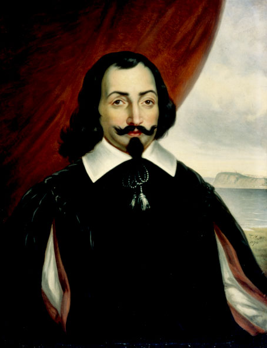

סמואל דה שמפלן

לחץ על התמונה להגדלה
Portrait of Samuel de Champlain | Source: Wikimedia Commons | License: Public Domain
מקור ומשמעות השמות: האדם והעיר (אטימולוגיה מורחבת)
שם פרטי: סמואל (Samuel)
השם "סמואל" הוא הגרסה הצרפתית והבינלאומית לשם המקראי העברי שְׁמוּאֵל.
פירוש ומשמעות דתית: הפירוש המילולי הוא "שמו אל" או "שמע אל". בצרפת של המאה ה-16, שהייתה שסועה במלחמות דת עקובות מדם, השם "סמואל" היה פופולרי במיוחד בקרב משפחות פרוטסטנטיות (הוגנוטים) שהעדיפו שמות תנ"כיים על פני שמות של קדושים קתוליים. עובדה זו מובילה היסטוריונים להניח ששמפלן נולד כפרוטסטנט, והמיר את דתו לקתוליות מאוחר יותר בחייו כדי לזכות בגיבוי מלכותי ובקידום בשירות מלך צרפת.
שם משפחה: דה שמפלן (de Champlain)
זהו שם משפחה צרפתי טופונימי (הנגזר משם מקום). הקידומת "דה" (de) מציינת "מ-" או ייחוס.
מקור בלשני: השם מורכב מהמילים בצרפתית עתיקה: Champ (שדה, מהלטינית Campus) ו-Plain (שטוח/פתוח). המשמעות היא "מן השדה הפתוח". באופן סמלי, שמפלן בילה את חייו במיפוי שדות, יערות ואגמים עצומים, והפך בעצמו לשם גיאוגרפי כאשר נתן את שמו לאגם ענק בצפון אמריקה (אגם שמפלן).
השם הגיאוגרפי: קוויבק (Quebec) ומדוע בחר בו?
השם "קוויבק" אינו מילה בצרפתית כלל, אלא אימוץ מבריק של מונח מתוך השפות הילידיות של צפון אמריקה – ספציפית שפת שבטי האלגונקין (Algonquin) והמיקמק (Mi'kmaq).
מקור בלשני: המילה המקורית בשפתם היא Kébec (קֶבֶּק), ופירושה המילולי הוא "המקום שבו הנהר נהיה צר".
מדוע בחר שמפלן בשם ובמקום הזה? בניגוד לספרדים שנהגו לכפות שמות קדושים אירופאים על ערים חדשות, שמפלן שמר על השם הילידי משום שהוא תיאר בדיוק גיאוגרפי מושלם את האסטרטגיה שלו. הוא הבין שמי שישלוט בנהר הסנט לורנס, ישלוט בכל הסחר של פנים היבשת. כשהפליג בנהר העצום (שרוחבו מגיע לעשרות קילומטרים), הוא הגיע לנקודה שבה הנהר לפתע מוצר לרוחב של קילומטר אחד בלבד (בין הצוק שעליו יושבת קוויבק לעיר לויס). שמפלן זיהה שזהו "צוואר הבקבוק" האולטימטיבי: מבצר שיוקם על צוק זה יוכל לטווח בתותחים בקלות כל ספינה אנגלית או הולנדית שתנסה לעבור. השם "קוויבק" ייצג את היתרון הצבאי והמסחרי המוחלט של האתר.
ילדות מוקדמת: עיר הנמל ורוחות האוקיינוס
סמואל דה שמפלן נולד בעיירת החוף והנמל המבוצרת ברואז' (Brouage) שבמחוז סנטונז', על חוף האוקיינוס האטלנטי בצרפת, בסביבות שנת 1567.
לפני שיצא לאמריקה, שמפלן שירת כקצין אפסנאות בצבאו של מלך צרפת לעתיד, אנרי הרביעי, שם רכש ניסיון בלוגיסטיקה צבאית. לאחר מכן, יצא למסע חשאי בן שנתיים וחצי תחת דגל ספרד לקריביים ולמקסיקו, שם תיעד בחשאי את נכסי האימפריה הספרדית.
החיבור לכתר: הדו"ח הסודי ורישיון המונופול
כיצד המלך אנרי הרביעי שמע על יומנו הסודי של דה שמפלן?
הגעתו של שמפלן לחצר המלכות לא הייתה מקרית, אלא פרי של רשת קשרים צבאיים עמוקה. במהלך מלחמות הדת בצרפת, שמפלן שירת בצבא תחת פיקודו העליון של מי שלימים הפך למלך אנרי הרביעי.
כאשר שמפלן חזר ממסעו במקסיקו ובקריביים ב-1601, הוא נשא עמו יומן מאויר וסודי ביותר בשם "Bref Discours", שהכיל שרטוטים מדויקים של הנמלים הספרדיים וחולשותיהם. שמפלן יצר קשר עם מפקדו הצבאי לשעבר, האדמירל אֵמָאר דה שאסט (Aymar de Chaste), שהפך לאיש חזק בחצר המלכות בפריז. דה שאסט הוא זה שהציג את שמפלן ואת יומנו בפני המלך. המלך אנרי הרביעי, שהיה רעב למודיעין צבאי וכלכלי על האימפריה הספרדית, נדהם מאיכות המידע. הוא העניק לשמפלן קצבה שנתית מלכותית ואת התואר הלא-רשמי של "הגיאוגרף המלכותי".
האם המשלחות היו פרטיות או בשליחות המלך?
המשלחות לקנדה פעלו תחת מודל ייחודי: מנגנון כלכלי פרטי בגיבוי ורישיון מלכותי.
אוצר המלוכה הצרפתי היה מרוקן. המלך אנרי הרביעי לא יכול היה לממן ציים ענקיים. לכן, הוא העניק לסוחרים פרטיים (כמו האדמירל דה שאסט) מונופול מלכותי על סחר הפרוות הרווחי, ובתמורה דרש מהם לממן את המסעות וליישב את קנדה.
שמפלן הפליג בספינות בבעלות פרטית שמומנו על ידי סוחרים, אך הוא עצמו הפליג תחת מינוי ישיר של המלך כ"צופה" וכקרטוגרף רשמי, במטרה לדווח לכתר על התקדמות ההתיישבות ואפשרויות הסחר.
המסעות: מהמשקיף המלכותי ועד הקמת קוויבק
1. המסע הראשון לקנדה כ"משקיף מלכותי" (1603)
הרקע והנסיבות למסעו הראשון של שמפלן נרקמו כאשר פטרונו, האדמירל אֵמָאר דה שאסט, קיבל את מונופול סחר הפרוות והתארגן להוציא משלחת מסחרית גדולה. מי שפיקד על הספינות בפועל היה רב-חובל מנוסה בשם פרנסואה גראווה דו פו.
דה שאסט, בידיעת המלך, הזמין את שמפלן להצטרף. במסע זה, שמפלן לא היה המפקד. הוא הצטרף כנוסע נספח, קרטוגרף והיסטוריון. משימתו הייתה לחקור את שפך נהר הסנט לורנס (בעקבות המפות הישנות של ז'אק קרטייה), ליצור קשרים עם הילידים, ולשרטט מפות מעודכנות שיוצגו למלך עם חזרתו כדי להוכיח שהאזור בשל להתיישבות.
2. המסע השני: הקמת פורט רויאל באקאדיה (1604-1607)
במסעו השני, תחת מפקד חדש (פייר דוגואה דה מון), סייע שמפלן להקים את יישוב הקבע הצרפתי הראשון ב"אקאדיה" (היום בנובה סקוטיה) וערך מיפוי מדויק להפליא של חופי האוקיינוס האטלנטי דרומה עד אזור בוסטון וקייפ קוד, הרבה לפני הגעת האנגלים לשם.
3. המסע השלישי: ייסוד העיר קוויבק (1608)
לאחר סיום הפעילות בפורט רויאל, שמפלן הבין שמוקד הכוח האמיתי לסחר בפרוות נמצא בעומק היבשת. בשנת 1608, הוא יצא לקנדה למסעו השלישי, הפעם כמוביל משלחת בכיר. ב-3 ביולי 1608, הוא עגן ב"צוואר הבקבוק" האסטרטגי שעליו דיווח במסעו הראשון. שם, בנקודה שבה הנהר נהיה צר, הוא הקים את ה"אביטסיון" (Habitation) – מבצר עץ צנוע בעל מספר מבנים. מעשה זה נחשב לתאריך הלידה הרשמי של העיר קוויבק סיטי, ולנקודת המוצא ההיסטורית של "צרפת החדשה".
אידאולוגיה: בריתות ולא שעבוד
בניגוד לספרדים ששיעבדו את האינקה והאצטקים, האידאולוגיה של שמפלן התבססה על שותפות אסטרטגית וטמיעה. הוא הבין שצרפתים מעטים לא ישמרו על המונופול ביערות העצומים ללא עזרת המקומיים.
תגליות גיאוגרפיות והשפעה היסטורית
1. חקר הימות הגדולות (The Great Lakes)
שמפלן היה האירופאי הראשון שחקר ותיעד חלק מהימות הגדולות. ב-1615 הוא הגיע עד לימת יורון (Lake Huron) וימת אונטריו. מפות הפנים היבשתיות ששרטט היו המדויקות ביותר בתקופתו, ושימשו את החוקרים שבאו אחריו.
2. "אב צרפת החדשה"
השפעתו חורגת מגילוי גיאוגרפי. שמפלן שמר במו ידיו על המושבה הצרפתית, גייס לה מתיישבים וכספים, ובנה את התשתית הדיפלומטית שאפשרה את הישרדותה. הוא נפטר ב-25 בדצמבר 1635 בקוויבק. מורשתו היא לידתה של קנדה הצרפתית (Francophone Canada), המשמרת את ייחודה ותרבותה עד היום.
מקורות וביבליוגרפיה (אימות מחקר אקדמי)
- "Champlain's Dream" (David Hackett Fischer, 2008): הביוגרפיה המקיפה המאמתת את העברת הדו"ח הסודי למלך אנרי הרביעי על ידי האדמירל דה שאסט, ומתארת את השילוב של מימון פרטי ומינוי מלכותי.
- "Des Sauvages" ו-"Voyages" (סמואל דה שמפלן): יומניו המקוריים שפורסמו החל מ-1603, בהם מפורטים תפקידו כמשקיף במסע הראשון והחלטתו הטקטית לייסד את קוויבק במסעו השלישי.
- The Canadian Encyclopedia: מאמרים על מקור השם "Kébec" (המקום הצר), המאמתים את השימוש במונח הגיאוגרפי משפת האלגונקין.
- Dictionary of Canadian Biography: הערך ההיסטורי והקרטוגרפי של פועלו של שמפלן מטעם אוניברסיטאות קנדה.